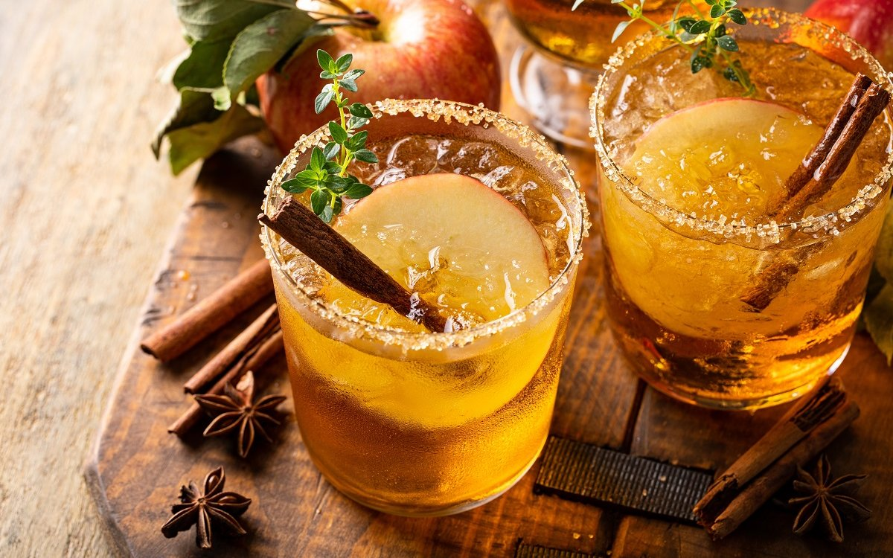

Простой рецепт яблочного сидра
shutterstock.com/Elena Veselova
Для яблочного вина, известного всем как сидр, обычно выбирают спелые яблоки кислых сортов. Но чтобы вкус напитка был более многогранным, к ним добавляют и другие плоды – от сладких до терпких или даже горьких. Главное, чтобы яблоки были без признаков порчи. Перед использованием плоды оставляют на три дня в темном месте, а затем вместо ополаскивания протирают лоскутом чистой материи.
Ингредиенты:
|
яблоки |
4 кг |
|
сахар |
600-650 г |
Приготовление.
- Чистые яблоки освободите от плодоножки и измельчите любым удобным способом, не удаляя сердцевины.
- Положите яблочное пюре в чистые банки, наполнив их на две трети объема. Добавьте в массу сахар (150 г песка на 1 кг фруктов) и приступайте к приготовлению сусла.
- Сложите чистую медицинскую марлю в несколько слоев и замотайте ею горлышки банок. Оставьте в темном месте на четыре дня, но раз в сутки перемешивайте чистой деревянной ложкой.
- Спустя указанное время процедите жидкость через марлю и наполните полученным соком любую удобную стеклянную емкость, а сверху установите гидрозатвор. Оставьте емкость в темном месте на полтора-два (иногда – два с половиной) месяца. "Сигналом" к следующему действию будет отсутствие в банке пузырьков воздуха и образование осадка на дне посветлевшей жидкости.
- Еще раз процедите сидр, разлейте его в чистые бутылки, наполняя их до самого верха. Затем плотно закройте емкость и отправьте отстаиваться в помещение с температурой 10-12°С на три месяца.